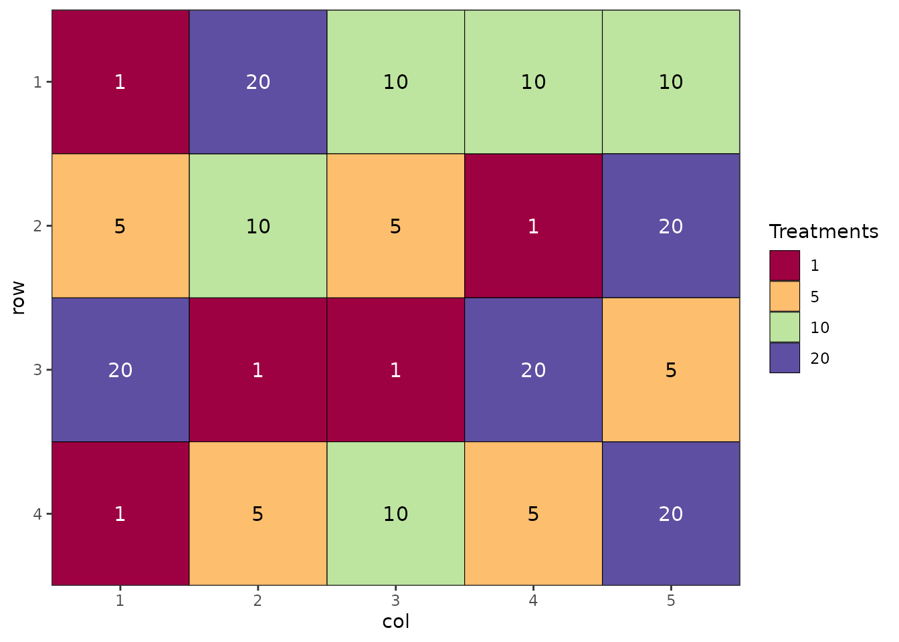

Adding Orientation Arrows and Annotations to Field Layout Plots
Source:vignettes/plot_annotation.Rmd
plot_annotation.RmdIntroduction
When presenting field trial layouts, it’s often important to provide
spatial context through orientation arrows (indicating north or other
directions) and annotations that reference physical features of the
field (such as boundaries, gates, or adjacent landmarks). This vignette
demonstrates how to add these elements to field layout plots generated
by the biometryassist package.
The biometryassist package generates field layout plots
as ggplot2 objects, which means we can enhance them using
standard ggplot2 functions and extensions. This vignette
will show you how to:
- Add orientation arrows with arbitrary rotation
- Add text annotations outside the plotting area to label field features
Setup
First, let’s load the required packages and generate a basic experimental design:
library(biometryassist)
library(ggplot2)
library(ggspatial)
# Generate a completely randomized design (CRD)
des.out <- design(
type = "crd",
treatments = c(1, 5, 10, 20),
reps = 5,
nrows = 4,
ncols = 5,
seed = 42
)
Source of Variation df
=============================================
treatments 3
Residual 16
=============================================
Total 19
# View the basic plot
des.out$plot.des
The design() function creates a field layout and stores
it in des.out$plot.des as a ggplot2 object. We
can now enhance this plot with additional annotations.
Adding an Orientation Arrow
Orientation arrows help readers understand the spatial layout of a field trial relative to cardinal directions or other reference points. This is particularly useful when field orientation affects environmental conditions like sun exposure or prevailing winds.
Using ggspatial for North Arrows
The ggspatial package provides the
annotation_north_arrow() function, which is specifically
designed for adding directional arrows to plots. While it’s primarily
intended for spatial data with coordinate reference systems, it works
well for field layout plots too.
des.out$plot.des +
annotation_north_arrow(
location = "tr",
rotation = 45,
pad_x = unit(-1.5, "cm"),
pad_y = unit(0.5, "cm"),
style = north_arrow_fancy_orienteering(
line_width = 1,
text_size = 10
)
) +
coord_cartesian(clip = "off") +
theme(plot.margin = margin(t = 10, r = 50, b = 10, l = 10, unit = "pt"))
Let’s break down each component of this code:
annotation_north_arrow() arguments:
location = "tr": Places the arrow in the top-right corner. Other options include"tl"(top-left),"bl"(bottom-left),"br"(bottom-right), or you can specify exact coordinates as a numeric vectorc(x, y).rotation = 45: Rotates the arrow 45 degrees clockwise from north. This allows you to indicate the true field orientation. For example, if north in your field is 45 degrees clockwise from the top of your plot, userotation = 45. Userotation = 0if north aligns with the top of the plot.pad_x = unit(-1.5, "cm"): Moves the arrow horizontally. Negative values move it left, positive values move it right. This allows fine-tuning of the arrow position.pad_y = unit(0.5, "cm"): Moves the arrow vertically. Positive values move it up, negative values move it down.-
style = north_arrow_fancy_orienteering(): Specifies the visual style of the arrow. Other available styles include:-
north_arrow_minimal(): Simple arrow design -
north_arrow_nautical(): Compass-style design -
north_arrow_orienteering(): Classic orienteering map style
Within each style function, you can customize:
-
line_width: Thickness of arrow lines -
text_size: Size of the “N” label
-
Additional ggplot2 modifications:
coord_cartesian(clip = "off"): This is critical. By default, ggplot2 clips (cuts off) any elements that fall outside the plotting area. Settingclip = "off"allows the arrow to be drawn outside the plot panel, which is necessary when using padding to position it beyond the plot boundaries.theme(plot.margin = ...): Expands the margins around the plot to create space for the arrow. Themargin()function takes four values: top, right, bottom, left. Units are specified with theunitparameter (here, points). We increase the right margin to50ptto accommodate the arrow.
Customizing Arrow Appearance
You can customize the arrow style parameters to match your needs:
des.out$plot.des +
annotation_north_arrow(
location = "tr",
rotation = 30, # Different rotation angle
pad_x = unit(-1, "cm"),
pad_y = unit(0.3, "cm"),
style = north_arrow_minimal( # Different style
line_width = 1.5,
text_size = 12
)
) +
coord_cartesian(clip = "off") +
theme(plot.margin = margin(t = 10, r = 50, b = 10, l = 10, unit = "pt"))Adding Field Feature Annotations
In addition to orientation, it’s often helpful to label physical features of the field site, such as boundaries, access points, or adjacent landmarks. These annotations provide practical context for field operations and help with trial management.
Using annotate() for Text Labels
The annotate() function allows us to add text (and other
geometric objects) to specific locations on the plot. Unlike the north
arrow, these annotations use the plot’s coordinate system.
des.out$plot.des +
annotate(
"text",
x = 5.8,
y = mean(des.out$design$row),
label = "Boundary Road",
angle = 270,
hjust = 0.5,
vjust = -0.5,
size = 6
) +
annotate(
"text",
x = 1.5,
y = 5,
label = "Gate",
hjust = 0.5,
vjust = -0.5,
size = 6
) +
coord_cartesian(xlim = c(0.5, 5.5), ylim = c(0.5, 4.5), clip = "off") +
theme(plot.margin = margin(t = 10, r = 70, b = 20, l = 10, unit = "pt"))
Let’s examine each annotation in detail:
First annotation - “Boundary Road” (vertical text on right):
"text": Specifies that we’re adding a text annotation (other options include"rect","segment", etc.)x = 5.8: The x-coordinate for the text. Since our plot has 5 columns (numbered 1-5), placing it at 5.8 positions it outside the right edge of the plot.y = mean(des.out$design$row): Centers the text vertically by calculating the mean of all row numbers. This ensures the text is centered regardless of the number of rows.label = "Boundary Road": The text to display.angle = 270: Rotates the text 270 degrees (or -90 degrees), making it read from bottom to top. This is conventional for labels on the right side of plots.hjust = 0.5: Horizontal justification. 0.5 centers the text horizontally relative to the x-coordinate.vjust = -0.5: Vertical justification. Negative values move the text away from the plot (outward), while positive values would move it toward the plot. This ensures the text doesn’t overlap with the plot area.size = 6: The font size for the text.
Second annotation - “Gate” (horizontal text on top):
x = 1.5: Positions the text above column 1.5 (between columns 1 and 2).y = 5: Places it above the top row (row 4), outside the plotting area.angleis not specified, so the text remains horizontal (0 degrees).Other parameters work similarly to the first annotation.
Critical settings for external annotations:
-
coord_cartesian(xlim = c(0.5, 5.5), ylim = c(0.5, 4.5), clip = "off"):-
xlimandylimexplicitly set the visible data range. This is essential because when we add annotations with coordinates outside the data range (like x = 5.8), ggplot2 would normally expand the axis limits to include these points, stretching the plot. By explicitly setting the limits to match our original plot grid (columns 0.5-5.5, rows 0.5-4.5), we prevent this expansion. -
clip = "off"allows drawing outside these limits, so our annotations at x = 5.8 and y = 5 are still visible.
-
-
theme(plot.margin = ...): Expands margins to create physical space for the text. The right margin is set to70ptto accommodate “Boundary Road”, and the top margin is20ptfor “Gate”.
Understanding the Coordinate System
The field layout plot uses the row and column numbers as coordinates:
- Columns are numbered 1 to ncols (here, 1 to 5) - Rows are
numbered 1 to nrows (here, 1 to 4) - Each plot cell is
centered on its integer coordinates
To position annotations: - Outside right edge: Use x > max column number (e.g., x = 5.8 when max column is 5) - Outside top edge: Use y > max row number (e.g., y = 5 when max row is 4) - Outside left edge: Use x < min column number (e.g., x = 0.2 when min column is 1) - Outside bottom edge: Use y < min row number (e.g., y = 0.2 when min row is 1)
Adding Multiple Features
You can add as many annotations as needed by chaining multiple
annotate() calls:
des.out$plot.des +
annotate("text", x = 5.8, y = mean(des.out$design$row),
label = "Boundary Road", angle = 270, hjust = 0.5, vjust = -0.5, size = 6) +
annotate("text", x = 1.5, y = 5,
label = "Gate", hjust = 0.5, vjust = -0.5, size = 6) +
annotate("text", x = 0.2, y = mean(des.out$design$row),
label = "Irrigation Line", angle = 90, hjust = 0.5, vjust = -0.5, size = 5) +
annotate("text", x = mean(des.out$design$col), y = 0.2,
label = "Drainage Ditch", hjust = 0.5, vjust = 1, size = 5) +
coord_cartesian(xlim = c(0.5, 5.5), ylim = c(0.5, 4.5), clip = "off") +
theme(plot.margin = margin(t = 20, r = 70, b = 30, l = 50, unit = "pt"))
Combining Orientation Arrows and Annotations
You can combine both techniques to create a fully annotated field layout:
des.out$plot.des +
# Add north arrow
annotation_north_arrow(
location = "tr",
rotation = 45,
pad_x = unit(-1.5, "cm"),
pad_y = unit(0.5, "cm"),
style = north_arrow_fancy_orienteering(line_width = 1, text_size = 10)
) +
# Add field feature annotations
annotate("text", x = 5.8, y = mean(des.out$design$row),
label = "Boundary Road", angle = 270, hjust = 0.5, vjust = -0.5, size = 6) +
annotate("text", x = 1.5, y = 5,
label = "Gate", hjust = 0.5, vjust = -0.5, size = 6) +
# Apply coordinate system and theme adjustments
coord_cartesian(xlim = c(0.5, 5.5), ylim = c(0.5, 4.5), clip = "off") +
theme(plot.margin = margin(t = 20, r = 70, b = 20, l = 10, unit = "pt"))
Tips and Best Practices
Adjusting Margins
If your annotations are cut off or too far from the plot:
-
Increase margin if text is cut off:
margin(t = 30, r = 80, ...) -
Decrease margin if there’s too much white space:
margin(t = 10, r = 40, ...) - Margins are specified as: top, right, bottom, left
Text Rotation Guidelines
-
angle = 0: Horizontal text (default) -
angle = 90: Vertical text, reading bottom-to-top -
angle = 270orangle = -90: Vertical text, reading top-to-bottom (conventional for right-side labels) -
angle = 45: Diagonal text (sometimes useful for corner annotations)
Justification Parameters
-
hjust = 0: Left-aligned -
hjust = 0.5: Center-aligned (most common) -
hjust = 1: Right-aligned -
vjust = 0: Bottom-aligned -
vjust = 0.5: Middle-aligned -
vjust = 1: Top-aligned
For external annotations, vjust values outside 0-1 (like
vjust = -0.5) create spacing between the text and the plot
edge.
Working with Different Design Types
These techniques work with any design type generated by
biometryassist. Here’s an example with a randomized
complete block design (RCBD):
# Generate an RCBD
des.rcbd <- design(
type = "rcbd",
treatments = LETTERS[1:6],
reps = 4,
nrows = 6,
ncols = 4,
brows = 6,
bcols = 1,
seed = 123
)
Source of Variation df
=============================================
Block stratum 3
---------------------------------------------
treatments 5
Residual 15
=============================================
Total 23
# Add annotations
des.rcbd$plot.des +
annotation_north_arrow(
location = "tr",
rotation = 0,
pad_x = unit(-1, "cm"),
pad_y = unit(0.5, "cm"),
style = north_arrow_minimal(line_width = 1, text_size = 10)
) +
annotate("text", x = 4.8, y = mean(des.rcbd$design$row),
label = "Access Road", angle = 270, hjust = 0.5, vjust = -0.5, size = 5) +
coord_cartesian(xlim = c(0.5, 4.5), ylim = c(0.5, 6.5), clip = "off") +
theme(plot.margin = margin(t = 10, r = 60, b = 10, l = 10, unit = "pt"))
Note how the coordinate limits (xlim and
ylim) are adjusted to match the dimensions of this design
(4 columns, 6 rows).
Troubleshooting
Problem: Annotation is cut off
Solution: Increase the relevant plot margin using
theme(plot.margin = margin(...)). Ensure margins are large
enough to accommodate your text.
Problem: Plot is stretched or distorted
Solution: When using annotate() with
coordinates outside the plot range, always specify explicit limits in
coord_cartesian(xlim = ..., ylim = ...) to prevent
automatic axis expansion.
Conclusion
Adding orientation arrows and field feature annotations to your
experimental design plots enhances their utility for field management,
reporting, and publication. The combination of
ggspatial::annotation_north_arrow() for directional
reference and ggplot2::annotate() for custom labels
provides flexible tools for creating publication-ready field layout
diagrams.
Remember the key principles: - Use
coord_cartesian(clip = "off") to allow drawing outside the
plot panel - Set appropriate plot.margin values to create
space for external elements - For annotate(), explicitly
set xlim and ylim to prevent axis stretching -
Experiment with positioning and adjust iteratively
Further Reading
- ggplot2 documentation
- ggspatial package documentation
- biometryassist package vignettes for experimental design options